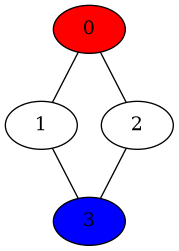

Death First Search, ou couper les bons liens
Valentin PORTAIL - Prép'ISIMA 1 - 2021/2022


Figure 1 : Image montant des câbles de fibre optique dans lesquels transitent des informations
Table des matières
1 Enoncé du problème
Dans cet exercice, nous contrôlons un virus informatique ayant pour but de s'infiltrer dans un réseau informatique sans se faire remarquer. L'objectif est d'empêcher l'agent Bobnet (représenté dans l'exercice en rouge) de communiquer sur le réseau interne en coupant les passages vers les passerelles (représentées en bleu).
Pour cela, nous disposons :
- de la carte du sous-réseau, c'est-à-dire :
- du nombre de nœuds du sous-réseau noté N;
- du nombre de liens du sous-réseau noté L;
- du nombre de passerelles du réseau noté E;
- des différents liens entre des nœuds N1 et N2;
- des différentes passerelles EI.
- de l'emplacement de l'agent Bobnet noté SI.
Chaque nœud ne pourra être relié, au maximum, qu'à une seule passerelle.
Le programme devra renvoyer les deux nœuds C1 et C2 entre lesquels se trouve le lien à couper.
A chaque tour de jeu, il faudra couper un des liens du sous-réseau, puis l'agent Bobnet se déplace sur l'un des nœuds encore accessibles.
L'exercice est réussi si l'agent Bobnet ne peut plus atteindre aucune passerelle. Il est raté s'il atteint une passerelle.
2 Méthode de résolution
2.1 Stocker les données
On commence par stocker le nombre de nœuds dans le niveau dans une variable N, le nombre de liens dans une variable L et le nombre de passerelles dans une variable E.
On va ensuite les liens qui relient les nœuds entre eux.
Pour cela, on crée une structure nlinks qui contiendra les liens partant de chaque nœud. Elle contiendra le nombre de liens nb_links et l'ensemble des nœuds adjacents stockés dans un tableau nodes.
Ces structures seront stockées dans un tableau links de manière à ce que l'élément links[i] corresponde au nœud i. (Chaque nœud est numéroté de 0 à N-1.)
Attention : Chaque lien sera donc représenté 2 fois (de A à B et de B à A). Il faudra donc faire attention au moment de retirer un lien du tableau.
Par exemple, le tableau suivant :
| i | nb_links | nodes |
|---|---|---|
| 0 | 2 | {1,2} |
| 1 | 2 | {0,3} |
| 2 | 2 | {0,3} |
| 3 | 2 | {1,2} |
…représentera le graphe suivant :

Les nœuds correspondant aux passerelles seront, quant à eux, stockés dans un tableau gateways.
Dans l'exemple ci-dessus, puisque la seule passerelle est le nœud 3, le tableau gateways contiendra seulement la valeur 3.
2.2 Choisir le lien à couper
On suppose que l'agent Bobnet est sur le nœud SI.
À chaque tour de jeu, afin de trouver le lien à couper, on procède de la manière suivante :
- Si l'agent est à un lien d'une passerelle, on coupe le lien reliant SI à la passerelle.
- Sinon, on coupe un lien quelconque autour de l'agent.
Il faudra donc parcourir les différents nœuds adjacents à SI et vérifier s'ils apparaissent dans le tableau gateways. Si on ne trouve aucune passerelle, on coupera de manière arbitraire le premier lien apparaissant dans le tableau links.
Une fois cela fait, pour éviter de recouper un lien déjà coupé, on enlèvera le lien du tableau links en faisant attention à bien enlever les deux apparitions du lien.
3 Implémentation en C
3.1 Description pas à pas
On commence par définir la structure nlinks qui contiendra le nombre de liens nb_links et l'ensemble des nœuds adjacents stockés dans un tableau nodes. Elle sera donc implémentée comme un tableau partiellement rempli de taille 50, ce qui permettra de passer la plupart des tests.
Remarque : Comme on ne connaît pas à l'avance le nombre de nœuds adjacents à chaque nœud, il n'est pas possible d'allouer dynamiquement la taille du tableau.
typedef struct node_links { int nb_links; int nodes[50]; } nlinks;
On définit ensuite la fonction rm_link qui prend en argument un tableau de nlinks appelé links et deux entiers N1 et N2 qui représentent deux nœuds de links, qui ne renvoie rien et qui supprime le lien reliant N1 et N2 en faisant attention à bien supprimer les deux apparitions :
void rm_link (nlinks * links, int N1, int N2) { int i; int removed1 = 0; int removed2 = 0; /* N1 -> N2 */ i = 0; while (!removed1 && i < links[N1].nb_links) { if (links[N1].nodes[i] == N2) { links[N1].nodes[i] = links[N1].nodes[links[N1].nb_links - 1]; --links[N1].nb_links; removed1 = 1; } ++i; } /* N2 -> N1 */ i = 0; while (!removed2 && i < links[N2].nb_links) { if (links[N2].nodes[i] == N1) { links[N2].nodes[i] = links[N2].nodes[links[N2].nb_links - 1]; --links[N2].nb_links; } ++i; } }
Dans le programme principal, on commence par demander à CodinGame le nombre de nœuds N, le nombre de liens L et le nombre de passerelles E :
int N; int L; int E; scanf("%d%d%d", &N, &L, &E);
On initialise ensuite le tableau links qui contiendra les liens entre les nœuds. CodinGame indiquera les nœuds entre lesquels il doit y avoir un lien, puis le programme les ajoutera dans le tableau links :
int i; nlinks links[500]; for (i = 0; i < L; i++) { int N1; int N2; scanf("%d%d", &N1, &N2); links[N1].nodes[links[N1].nb_links] = N2; ++links[N1].nb_links; links[N2].nodes[links[N2].nb_links] = N1; ++links[N2].nb_links; }
On fait de même avec la tableau gateways qui contiendra les passerelles du réseau :
int gateways[20]; for (i = 0; i < E; i++) { int EI; scanf("%d", &EI); gateways[i] = EI; }
Attention : A cet instant, le programme entre dans une boucle infinie. Chaque itération dans la boucle infinie représentera un tour de jeu. CodinGame arrêtera la boucle infinie lorsque les conditions de victoire, c'est-à-dire, lorsque l'agent Bobnet ne peut plus atteindre aucune passerelle, auront été remplies.
A chaque tour de jeu, CodinGame indiquera la position de l'agent Bobnet qui sera stockée dans une variable SI.
On souhaite voir si l'un des nœuds adjacents à SI est une passerelle. Pour cela, on parcourt l'ensemble des nœuds n du tableau links[SI].nodes et l'ensemble des passerelles g du tableau gateways et on vérifie si on trouve deux valeurs identiques. Si c'est le cas, on supprime le lien entre SI et le nœud gateways[g].
Si on ne trouve rien à la fin du parcours, on supprimera le lien entre SI et le nœud links[SI].nodes[0].
On aura stocké au préalable le deuxième nœud avant la suppression du lien dans une variable C2.
On renvoie ensuite à CodinGame les nœuds SI et C2.
while (1) { int SI; scanf("%d", &SI); int n; int g; int found = 0; int C2; n = 0; while (!found && (n < links[SI].nb_links)) { g = 0; while (!found && g < E) { if (links[SI].nodes[n] == gateways[g]) { found = 1; C2 = gateways[g]; rm_link(links, SI, gateways[g]); } ++g; } ++n; } if (!found) { C2 = links[SI].nodes[0]; rm_link(links, SI, links[SI].nodes[0]); } printf("%d %d\n", SI, C2); }
3.2 Code complet
#include <stdlib.h> #include <stdio.h> typedef struct node_links { int nb_links; int nodes[50]; } nlinks; void rm_link (nlinks * links, int N1, int N2) { int i; int removed1 = 0; int removed2 = 0; /* N1 -> N2 */ i = 0; while (!removed1 && i < links[N1].nb_links) { if (links[N1].nodes[i] == N2) { links[N1].nodes[i] = links[N1].nodes[links[N1].nb_links - 1]; --links[N1].nb_links; removed1 = 1; } ++i; } /* N2 -> N1 */ i = 0; while (!removed2 && i < links[N2].nb_links) { if (links[N2].nodes[i] == N1) { links[N2].nodes[i] = links[N2].nodes[links[N2].nb_links - 1]; --links[N2].nb_links; } ++i; } } int main () { int N; int L; int E; scanf("%d%d%d", &N, &L, &E); int i; nlinks links[500]; for (i = 0; i < L; i++) { int N1; int N2; scanf("%d%d", &N1, &N2); links[N1].nodes[links[N1].nb_links] = N2; ++links[N1].nb_links; links[N2].nodes[links[N2].nb_links] = N1; ++links[N2].nb_links; } int gateways[20]; for (i = 0; i < E; i++) { int EI; scanf("%d", &EI); gateways[i] = EI; } while (1) { int SI; scanf("%d", &SI); int n; int g; int found = 0; int C2; n = 0; while (!found && (n < links[SI].nb_links)) { g = 0; while (!found && g < E) { if (links[SI].nodes[n] == gateways[g]) { found = 1; C2 = gateways[g]; rm_link(links, SI, gateways[g]); } ++g; } ++n; } if (!found) { C2 = links[SI].nodes[0]; rm_link(links, SI, links[SI].nodes[0]); } printf("%d %d\n", SI, C2); } return 0; }
4 Tests
5 Description d'une autre solution
Cette solution a été proposée sur CodinGame par l'utilisateur "Irthene" :
#include <stdlib.h> #include <stdio.h> #include <string.h> /** * Auto-generated code below aims at helping you parse * the standard input according to the problem statement. **/ int inside(int vect[], int var, int max){ int res=0; for(int i=0;i<max;i++){ if(vect[i]==var){ res=1; } } return res; } int main() { int N; // the total number of nodes in the level, including the gateways int L; // the number of links int E; // the number of exit gateways scanf("%d%d%d", &N, &L, &E); int matlink[N][N]; int gates[E]; int i,j; for(i=0;i<N;i++){ for(j=0;j<N;j++){ matlink[i][j]=0; } } for (int i = 0; i < L; i++) { int N1; // N1 and N2 defines a link between these nodes int N2; scanf("%d%d", &N1, &N2); matlink[N1][N2]=1; matlink[N2][N1]=1; } for (int i = 0; i < E; i++) { int EI; // the index of a gateway node scanf("%d", &EI); gates[i]=EI; } // game loop while (1) { int y; int visit[N]; int ante[N]; int SI; // The index of the node on which the Skynet agent is positioned this turn scanf("%d", &SI); for(int i=0;i<N;i++){ visit[i]=-1; } visit[0]=SI; ante[0]=NULL; i=1; // Construction d'un vecteur grâce au parcours en largeur pour trouver le chemin le plus court en partant de l'agent Skynet for(int j=0;j<N;j++){ for(int k=0;k<N;k++){ if(matlink[visit[j]][k]==1 && !inside(visit,k,N)){ // Si k n'a pas été visité et qu'il est rélié au noeud "j" du vecteur "visit" visit[i]=k; ante[i]=visit[j]; if(inside(gates,k,E)){ // Si le noeud testé est une passerelle, alors la boucle s'arrête y=visit[i]; k=N; j=N; } else i++; } } } // Déconstruction du vecteur pour trouver le point du chemin le plus court relié au joueur for(j=i;j>0;j--){ if(ante[i]==visit[j]){ // Si le premier noeud testé est égal au prédécesseur du second y=ante[i]; i=j; } } matlink[SI][y]=0; matlink[y][SI]=0; printf("%d %d\n",SI,y); } return 0; }
Cette solution a un fonctionnement assez différent de la mienne.
Dans ma solution, on regarde seulement si l'agent Bobnet est à un lien d'une passerelle. Si c'est le cas, on coupe ce lien, sinon, on coupe un lien quelconque autour de l'agent. Cette solution est plus astucieuse car elle utilise un parcours en profondeur pour trouver le chemin le plus court entre deux nœuds. Ainsi, le choix du lien à couper est toujours réfléchi afin de ralentir le plus possible l'agent Bobnet et le bloquer.
Elle a plusieurs avantages :
- Elle est plus efficace car le choix des liens n'est jamais aléatoire.
- Les liens sont stockés dans un tableau matlink où chaque élément matlink[i][j] est un entier 0 ou 1 indiquant s'il y a un lien entre i et j, ce qui est plus simple que de stocker les nœuds adjacents dans un tableau partiellement rempli.
Cependant, les initialisations de tableau (int matlink[N][N];) ne fonctionneraient pas un programme normal. CodinGame doit certainement traiter lui-même ce cas qui provoquerait en temps normal une erreur de compilation.
6 Conclusion
Pour conclure, lors de cet exercice, j'ai pu :
- revoir la notion de graphe vue au lycée (Cours de NSI en terminale).
- manipuler le type struct du langage C.
- comparer mon programme avec celui d'autres personnes et découvrir des solutions plus efficaces que celle trouvée.